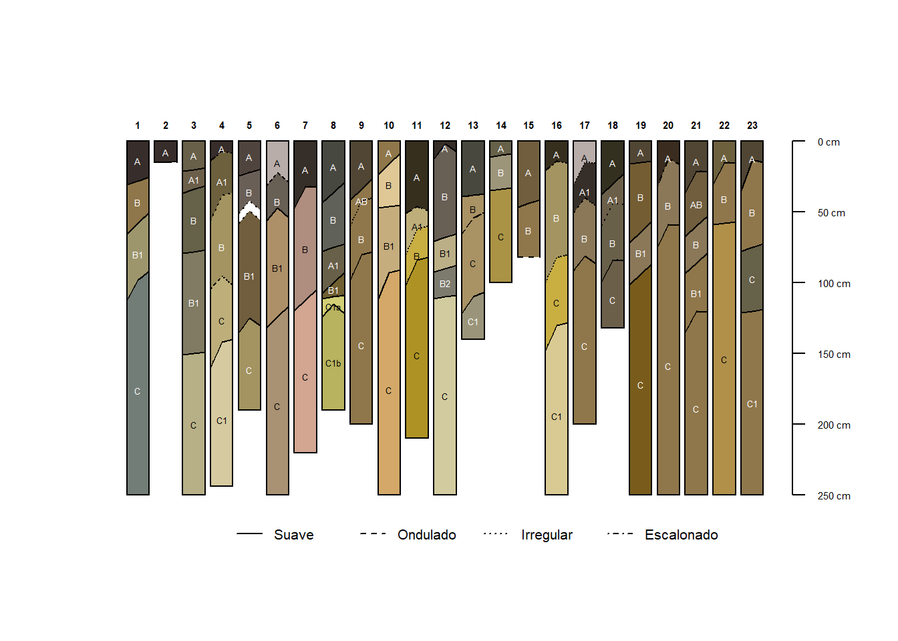
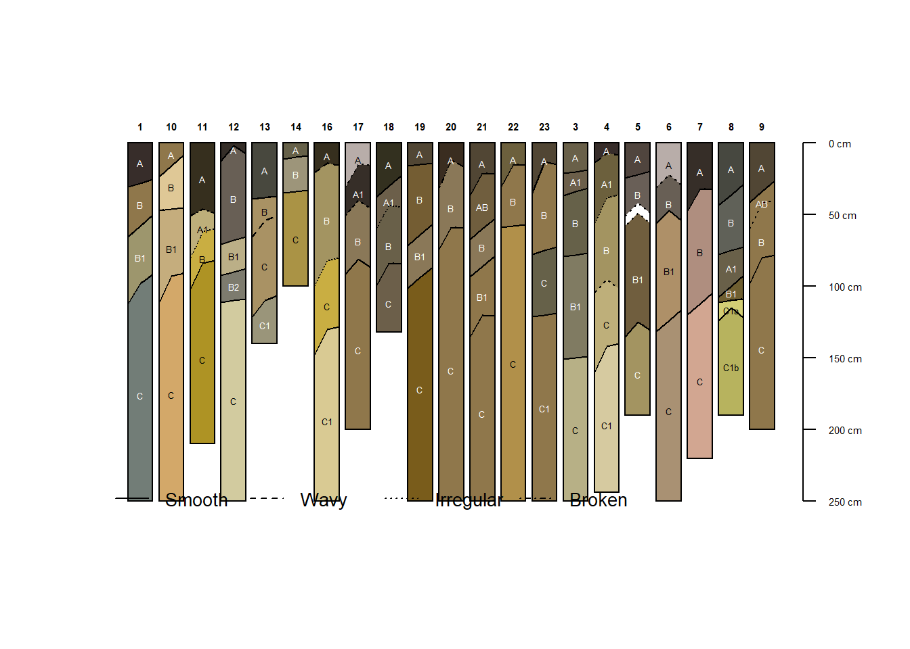

Este cuaderno presenta un ejemplo reproducible de visualización de perfiles de suelos, como parte del proyecto Huella de Ceniza Volcánica.
1. Configuración
2. Lectura de datos
Se cargan los datos de horizontes y sitios de los suelos muestreados.
datos <- readxl::read_excel(here::here("Perfiles_AQP", "Data","horizontes.xlsx"), sheet ="ejemplo_tabla_horizontes") head(datos)
# A tibble: 6 × 16
id_campo id name top bottom hz_boundary hue value chroma sand silt
<dbl> <dbl> <chr> <dbl> <dbl> <chr> <chr> <chr> <dbl> <dbl> <dbl>
1 970021 1 A 0 28 AW 2.5YR 2 1 10 80
2 970022 1 B 28 58 CS 2.5Y 5 4 10 30
3 970023 1 B1 58 102 GS 7.5Y 6 3 10 80
4 970024 1 C 102 250 AI 5G 5 1 10 30
5 970025 2 A 0 15 NA 2.5YR 2 1 10 80
6 970026 3 C 150 250 NA 7.5Y 7 3 10 30
# ℹ 5 more variables: clay <dbl>, distinctness <chr>, topography <chr>,
# ph_lab <chr>, ph_t_lab <chr>
3. Pre-procesamiento
Se crean columnas nuevas con los valores RGB a partir de los colores de Munsell
datos_procesados <- datos |># Corregimos formato texto a númeromutate(ph_lab =as.numeric(ph_lab),ph_t_lab =as.numeric(ph_t_lab)) |># Creamos columnas de datos procesados dplyr::mutate(# Convertir colores Munsell a RGBcolor_hz =munsell2rgb(the_hue = datos$hue,the_value = datos$value,the_chroma = datos$chroma),# Convertir límites "N/A" a NA realesdistinctness =case_when( distinctness =="N/A"~NA_character_,TRUE~ distinctness),topography =case_when( topography =="N/A"~NA_character_,TRUE~ topography),# Asigan valores a categorias de distinctnesshzd =case_when( distinctness =="Diffuse"~15, distinctness =="Gradual"~10, distinctness =="Clear"~5, distinctness =="Abrupt"~2,is.na(distinctness) ~5,TRUE~5) ) |>as.data.frame()
Warning: There was 1 warning in `dplyr::mutate()`.
ℹ In argument: `color_hz = munsell2rgb(the_hue = datos$hue, the_value =
datos$value, the_chroma = datos$chroma)`.
Caused by warning:
! non-standard notation in Munsell value, snapping to the nearest available value
consider using getClosestMunsellChip()
Creamos la colección de perfiles
datos_spc <- datos_procesados# Crear SoilProfileCollection# 'id' es el nombre de la columna que contiene el ID del perfil# 'top' es el nombre de la columna que contiene los límites superiores de los horizontes# 'bottom' es el nombre de la columna que contiene los límites infereiores de los horizontesdepths(datos_spc) <- id ~ top + bottom# Designa columna con nombre de horizonteshzdesgnname(datos_spc) <-'name'# Designa columna para distinción del límite entre horizontesdatos_spc$hd <-hzDistinctnessCodeToOffset(datos_spc$distinctness)# Designa columna para topografíadel límite entre horizontesdatos_spc$hzto <-hzTopographyCodeToOffset(datos_spc$topography)# Codifica el tipo de línea para la tropografía entre horizontesdatos_spc$hzto.lty <-hzTopographyCodeToLineType(datos_spc$topography)
4. Visualización
Se visualiza la colección de perfiles
# Ordenar perfiles por númeroids_numericos <-as.integer(profile_id(datos_spc))orden_plot <-order(ids_numericos)par(xpd =TRUE) # Permite dibujar fuera del área del plotaqp::plotSPC( datos_spc,color ="color_hz",plot.order = orden_plot, # ← Este es el que mandacex.names =0.4,depth.axis =TRUE,width =0.4,name.style ='center-center',hz.distinctness.offset ="hd", # Aplica el efecto visual del límitehz.topography.offset ='hzto',hz.boundary.lty ='hzto.lty')legend('bottom', horiz =TRUE, legend =c('Suave', 'Ondulado', 'Irregular', 'Escalonado'), lty =1:4, inset =-0.1, bty ='n', cex =0.65)

# Conservar solo perfiles con tres o más horizontesdatos_validos <-subset(datos_spc, aqp::profileApply(datos_spc, \(p) nrow(p) >=3))# Graficar con todoplotSPC( datos_validos,color ="color_hz",cex.names =0.4,depth.axis =TRUE,width =0.4,name.style ='center-center',hz.distinctness.offset ="hd",hz.topography.offset ='hzto',hz.boundary.lty ='hzto.lty') legend('bottomleft', horiz =TRUE, legend =c('Smooth', 'Wavy', 'Irregular', 'Broken'), lty =1:4, inset =-0.01, bty ='n', cex =0.85)

A continuación se grafican pero ordenandolos por pH
# 1. Calcular pH ponderado por espesor de horizontewt.mean.ph <-function(i) { thick <- i$bottom - i$topwtd.mean(i$ph_lab, weights = thick, na.rm =TRUE)}site(datos_spc)$ph_weighted <-profileApply(datos_spc, wt.mean.ph)# 2. Ordenar perfiles según el pH ponderadoorden_por_ph <-order(site(datos_spc)$ph_weighted)# 3. Exportar PNG con layout divididopng("perfil_tipo_ph.png", width =6, height =4, units ="in", res =300)# Definir layout: 93% perfiles (fila 1), 7% leyenda (fila 2)layout(matrix(1:2, nrow =2), heights =c(0.93, 0.07))# ──────────────── PANEL 1: Gráfico de perfiles ────────────────par(mar =c(5.2, 0, 4, 2)) # márgenes para que no corte etiquetas ni el ejeplotSPC( datos_spc,plot.order = orden_por_ph,color ="color_hz",cex.names =0.4,depth.axis =list(style ="traditional", cex =0.6),width =0.4,name.style ="center-center",hz.distinctness.offset ="hd",hz.topography.offset ="hzto",hz.boundary.lty ="hzto.lty")# Eje inferior con etiquetas de pH ponderadoaxis(1,at =1:length(datos_spc),labels =round(site(datos_spc)$ph_weighted[orden_por_ph], 2),cex.axis =0.6,las =2)# Etiqueta del eje xmtext(side =1,line =3.8,text ="Mean pH weighted by horizon thickness",cex =0.8)# ──────────────── PANEL 2: Leyenda ────────────────par(mar =c(0, 0, 0, 0))plot.new()legend("center",horiz =TRUE,legend =c("Smooth", "Wavy", "Irregular", "Broken"),lty =1:4,bty ="n",cex =0.8)dev.off()
png
2
Se grafica la curva de pH
# Calcular estadísticos de pH por profundidad (1 cm)agg_ph <-slab(datos_spc, fm =~ ph_lab)# Exportar gráfico angosto con texto reducidopng("curva_tipo_ph.png", width =3.2, height =4, units ="in", res =300)xyplot( top ~ p.q50 | variable,data = agg_ph,lower = agg_ph$p.q25,upper = agg_ph$p.q75,ylim =c(max(agg_ph$top), 0),ylab ="Depth (cm)",xlab ="Mean pH and IQR",panel = panel.depth_function,prepanel = prepanel.depth_function,alpha =0.3,sync.colors =TRUE,cf = agg_ph$contributing_fraction,cf.col ='black',cf.interval =20,cf.cex =0.5, # << tamaño reducido del % de contribuciónlayout =c(1, 1),par.settings =list(superpose.line =list(col ='slateblue', lwd =2),axis.text =list(cex =0.8),par.xlab.text =list(cex =1),par.ylab.text =list(cex =1),strip.background =list(col =grey(0.9)) ),strip =strip.custom(bg =grey(0.9), style =1), # asegurar que se dibujepar.strip.text=list(cex=1),scales =list(x =list(relation ='same', alternating =3, cex =0.8),y =list(cex =0.65) ))dev.off()